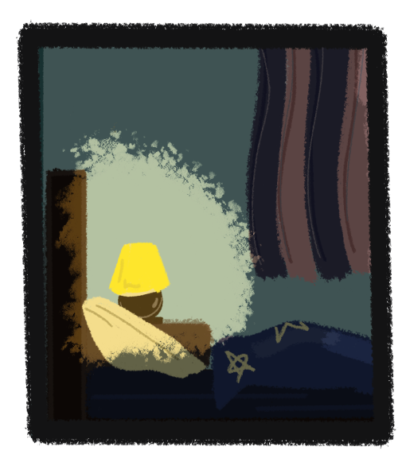

«Баю-баюшки-баю, не ложися на краю, придет серенький волчок, он ухватит за бочок...» Песни в народе рождаются не просто так. Каждый уголок и каждая тень может таить
в себе загадку или тайну. И иногда, знать, что таится
в глубине темного омута – плохая затея, ведь вскоре омут может захотеть взглянуть на вас.
Но как бы не был страшен мрак, его всегда можно прогнать с помощью света: солнце, лампа или обычный человек со светлым сердцем.

Ночь – время, когда тени под кроватью оживают.
Ваня, 6 летний мальчик, лежит и ворочается на кровати.
В это время волчок таится в засаде под кроватью
и потихоньку начинает из нее вылазить. Одна лапа вылезла наружу, еще одна, морда, а затем и все тело теперь находилось рядом с кроватью мальчика, который так вкусно лежит на бочку и повернут к нему спиной. Волчок собирается укусить лакомый бочок,
но тут Ваня резко просыпается и включает прикроватную лампу. Волчок, боясь света, сразу же убегает обратно в тень под кровать. Жмурясь от яркого света, Ваня встает и топает в коридор, где включает свет. Он направляется в туалет.
Но даже в освещенном светом коридоре находится угол тени – чем и пользуется Волчок, продолжая следить за своей добычей. Как только Ваня закрыл
за собой дверь, Волчок решается рискнуть – он начинает тянуться лапой до выключателя. Свет
в коридоре гаснет. Свободно передвигаясь, Волчок располагается за дверью туалета, чтобы при выходе мальчик не окатил его волной света. Долгожданная дверь открывается... Еще чуть-чуть и Волчок
наконец-то проглотит выслеживаемую добычу... Но тут соседняя дверь открывается, а выходящая оттуда мама, включает свет в коридоре. Мама Вани тоже решила сходить в туалет ночью, чем спасла сына.
Ваня направляется обратно к себе в кровать, удобно ложится и выключает прикроватный свет. Теперь то Волчку точно ничего не мешает. Жутко нависнув над Ваней, он медленно приближается, смакуя каждый миг вида незащищенного мальчика. Вот-вот он полакомится им и... На морду Волчка прилетает маленькая ладошка. Ванечка опять начал ворочаться и тем самым наткнулся на находящегося рядом Волчка. Крепко схватив теневую шерсть, мальчик поволок ее хозяина прямо к себе в кровать. От неожиданности Волчок начал уменьшаться в размерах и стал еще удобнее для того, чтобы мальчик его обнял. Ну и ладно, как-нибудь в следующий раз укусит за бочок.
Ваня – мальчик шести лет. Другим он может показаться угрюмым и мрачным из-за явных кругов под глазами,
но все совсем наоборот: он солнечный и наивный малыш, который еще не ведает в полной мере, что такое страх, злоба и потустороннее.
Всем в детстве пели колыбельную про волчка,
который придет и укусит за бочок. Он живет в тени
и выжидает, когда же очередное дитя повернется
нему спиной на бочок.
Мама Вани – хорошая отличная работящая женщина. Вместе с любимым мужем они воспитывают сына,
окружая его любовью и лаской.
Art.media – это творческое объединение художников-аниматоров, которое предоставляет возможность своим участникам выставлять свои работы на сайте и описывать процесс их создания.
На сайте каждый художник может создать свой профиль, загрузить свои анимационные работы, концепт-арты
и другие произведения и поделиться ими. Кроме того, участники могут добавлять описания и комментарии
к своим работам, рассказывая о технике, инструментах
и вдохновении, которые использовались при их создании.
Такая платформа позволяет художникам не только демонстрировать свой талант и творческий процесс,
но и получать обратную связь от зрителей и других участников сообщества. Это способствует обмену опытом, вдохновляет на новые идеи и помогает развивать профессиональные навыки.
Art.media становится местом сбора талантливых людей, где они могут вдохновляться друг другом, обсуждать свои работы, делиться опытом и продвигать свое творчество.